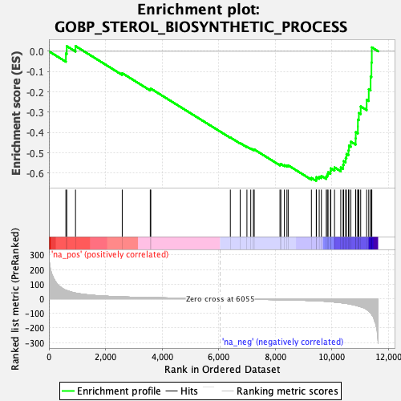
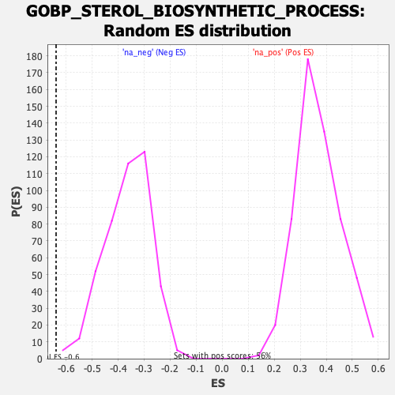

| | | Dataset | DE_genes |
| Phenotype | NoPhenotypeAvailable |
| Upregulated in class | na_neg |
| GeneSet | GOBP_STEROL_BIOSYNTHETIC_PROCESS |
| Enrichment Score (ES) | -0.63843715 |
| Normalized Enrichment Score (NES) | -1.7516632 |
| Nominal p-value | 0.00456621 |
| FDR q-value | 0.13227339 |
| FWER p-Value | 0.902 |
Table: GSEA Results Summary

Fig 1: Enrichment plot: GOBP_STEROL_BIOSYNTHETIC_PROCESS
Profile of the Running ES Score & Positions of GeneSet Members on the Rank Ordered List
| SYMBOL | RANK IN GENE LIST | RANK METRIC SCORE | RUNNING ES | CORE ENRICHMENT | | 1 | FAXDC2 | 600 | 58.551 | -0.0112 | No |
| 2 | SEC14L2 | 630 | 56.308 | 0.0253 | No |
| 3 | CH25H | 940 | 39.081 | 0.0258 | No |
| 4 | ABCA2 | 2592 | 12.960 | -0.1077 | No |
| 5 | PRKAA1 | 3582 | 7.828 | -0.1876 | No |
| 6 | ABCG4 | 3601 | 7.728 | -0.1838 | No |
| 7 | PLPP6 | 6413 | -2.741 | -0.4245 | No |
| 8 | POR | 6760 | -3.322 | -0.4520 | No |
| 9 | G6PD | 6999 | -3.751 | -0.4699 | No |
| 10 | LBR | 7134 | -3.970 | -0.4787 | No |
| 11 | ACAA2 | 7227 | -4.154 | -0.4838 | No |
| 12 | MBTPS2 | 7257 | -4.203 | -0.4834 | No |
| 13 | PMVK | 8167 | -6.697 | -0.5572 | No |
| 14 | SREBF1 | 8198 | -6.816 | -0.5550 | No |
| 15 | FGF1 | 8322 | -7.195 | -0.5607 | No |
| 16 | INSIG1 | 8413 | -7.519 | -0.5632 | No |
| 17 | PRKAA2 | 8458 | -7.737 | -0.5617 | No |
| 18 | ACLY | 9278 | -12.473 | -0.6237 | No |
| 19 | ERLIN2 | 9450 | -13.823 | -0.6289 | Yes |
| 20 | ARV1 | 9454 | -13.856 | -0.6195 | Yes |
| 21 | SQLE | 9554 | -14.723 | -0.6179 | Yes |
| 22 | SCAP | 9631 | -15.455 | -0.6137 | Yes |
| 23 | DHCR24 | 9803 | -17.569 | -0.6163 | Yes |
| 24 | LSS | 9840 | -18.207 | -0.6068 | Yes |
| 25 | EBP | 9867 | -18.748 | -0.5960 | Yes |
| 26 | ERLIN1 | 9952 | -20.029 | -0.5894 | Yes |
| 27 | HMGCR | 9963 | -20.214 | -0.5762 | Yes |
| 28 | PRKAG2 | 10095 | -22.455 | -0.5720 | Yes |
| 29 | DHCR7 | 10316 | -27.073 | -0.5722 | Yes |
| 30 | TM7SF2 | 10399 | -28.775 | -0.5593 | Yes |
| 31 | FDPS | 10419 | -29.174 | -0.5407 | Yes |
| 32 | MVK | 10488 | -31.022 | -0.5251 | Yes |
| 33 | CYB5R2 | 10517 | -31.750 | -0.5055 | Yes |
| 34 | HMGCS1 | 10588 | -34.197 | -0.4879 | Yes |
| 35 | MSMO1 | 10604 | -34.611 | -0.4652 | Yes |
| 36 | CYB5R3 | 10671 | -37.189 | -0.4451 | Yes |
| 37 | SC5D | 10842 | -44.663 | -0.4288 | Yes |
| 38 | HSD17B7 | 10846 | -44.730 | -0.3981 | Yes |
| 39 | ERG28 | 10920 | -49.017 | -0.3704 | Yes |
| 40 | CYP51A1 | 10921 | -49.083 | -0.3364 | Yes |
| 41 | IDI1 | 10955 | -50.930 | -0.3039 | Yes |
| 42 | NSDHL | 11020 | -54.749 | -0.2715 | Yes |
| 43 | FDFT1 | 11231 | -73.445 | -0.2387 | Yes |
| 44 | MBTPS1 | 11305 | -84.420 | -0.1865 | Yes |
| 45 | MVD | 11370 | -96.766 | -0.1250 | Yes |
| 46 | LPCAT3 | 11400 | -103.703 | -0.0556 | Yes |
| 47 | CYB5R1 | 11413 | -109.465 | 0.0192 | Yes |
Table: GSEA details [plain text format]

Fig 2: GOBP_STEROL_BIOSYNTHETIC_PROCESS: Random ES distribution
Gene set null distribution of ES for GOBP_STEROL_BIOSYNTHETIC_PROCESS